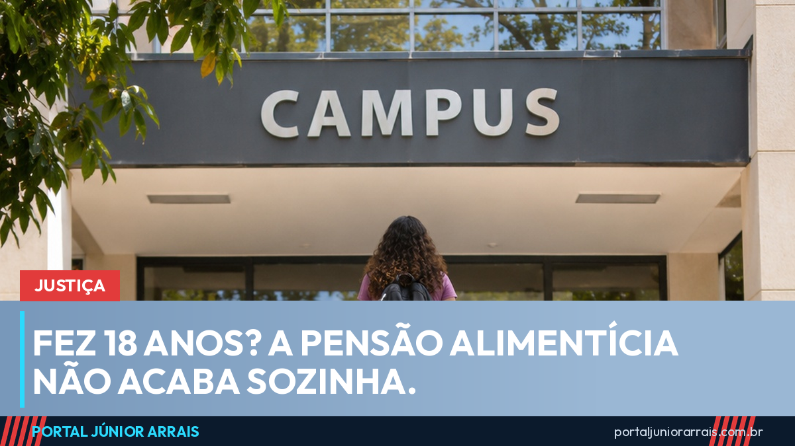

Pensão alimentícia não acaba sozinha aos 18 anos: o que diz a Súmula 358 do STJ

Muita gente acredita que a pensão alimentícia termina no dia em que o filho completa 18 anos. Não é assim. A Súmula 358 do STJ diz que o cancelamento da pensão de filho que atingiu a maioridade depende de decisão judicial, com direito de defesa, ainda que nos próprios autos do processo. Quem simplesmente para de pagar continua devendo — e pode ser cobrado.
Por que a maioridade não encerra tudo
Até os 18 anos, o dever de sustento vem do poder familiar, e a necessidade do filho é presumida. Depois disso, a obrigação pode continuar com base no parentesco, como prevê o Código Civil (arts. 1.694 e 1.695): são devidos alimentos quando quem pede não consegue se manter com o próprio trabalho e quem paga pode contribuir sem prejuízo do próprio sustento. A diferença é que, a partir da maioridade, o filho precisa mostrar que ainda precisa.
O filho que estuda
A situação mais comum de pensão depois dos 18 é a do filho que está em curso superior ou técnico. Os tribunais costumam manter os alimentos enquanto durarem os estudos, normalmente até por volta dos 24 anos, desde que o filho esteja de fato estudando e não tenha renda suficiente. Não existe uma idade-limite escrita na lei: cada caso é avaliado conforme a necessidade de quem recebe e a possibilidade de quem paga.
Também pode haver pensão depois dos 18 quando o filho tem doença ou deficiência que o impeça de trabalhar.
Como funciona o pedido para parar de pagar
Quem paga e entende que a pensão não é mais necessária deve entrar com uma ação de exoneração de alimentos. O filho é chamado a se manifestar e pode provar que continua precisando — com comprovante de matrícula, por exemplo. Enquanto não houver decisão, a obrigação continua valendo.
O caminho inverso também existe: se a situação de quem paga ou de quem recebe mudar, o art. 1.699 do Código Civil permite pedir a revisão do valor, para mais ou para menos.
E se houver acordo?
Pai, mãe e filho maior podem fazer um acordo para encerrar ou reduzir a pensão. O mais seguro é levar esse acordo para homologação na Justiça, para não restar dúvida sobre a data em que a obrigação terminou. Se a pensão é descontada em folha, o desconto só para com ordem do juiz.
A regra geral da pensão, quem pode pedir e o que acontece no atraso estão explicados nesta outra matéria sobre pensão alimentícia.
Pensão e trabalho do filho
Arrumar um estágio ou um emprego não acaba automaticamente com a pensão, mas pode ser motivo para pedir a redução ou o fim dela, se a renda do filho passar a cobrir suas necessidades. Da mesma forma, abandonar o curso ou ficar anos sem estudar pode enfraquecer o pedido de continuar recebendo. É sempre a análise do caso concreto que decide, por isso vale juntar documentos que mostrem a rotina e os gastos de quem recebe.
Onde buscar ajuda
Quem não pode pagar um profissional pode procurar a Defensoria Pública do seu estado ou núcleos de prática jurídica de faculdades. Em qualquer caso, procure um profissional de sua confiança antes de parar de pagar ou de aceitar o fim da pensão.
Conteúdo informativo — não substitui orientação individualizada sobre o seu caso.
Júnior Arrais · Advogado e editor do Portal Júnior Arrais
Advogado (OAB/MG 193.054, OAB/SP 535.563, OAB/RJ 268.781, OAB/PE 71.237, OAB/AL 24.340-A e OAB/PA 41.782-A), atuante em direito previdenciário e trabalhista, e comunicador de Ubá (MG). Escreve todos os dias sobre benefícios sociais, INSS, trabalho e economia do dia a dia, a partir do Diário Oficial, de portarias e de fontes oficiais, em linguagem simples. Conheça a linha editorial e a política de correções do portal.